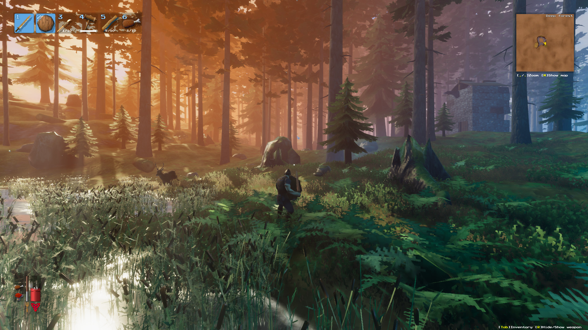

[ AdSense Ad Unit — Responsive Leaderboard ]
The Elder Boss Guide — Valheim's Second Forsaken
The Elder is the second Forsaken boss, found in the Black Forest. A colossal tree-like entity that summons roots from the ground and fires devastating vine projectiles. This guide covers summoning, his critical fire weakness, attack patterns, best weapons, and how to claim the best resource-gathering power in the game.
2nd
Boss Order
Black Forest
Biome
3
Ancient Seeds
🔥
Fire Weakness

1. How to Summon The Elder
[ AdSense Ad Unit — Responsive Rectangle ]
Location
The Elder's altar is in the Black Forest. Locate it by interacting with red runestones inside Burial Chambers (the Black Forest dungeons) or from Greydwarf spawners. The altar is a large stone platform surrounded by four indestructible stone pillars — these are your primary cover during the fight.
Summoning Requirements
| Item | Quantity | How to Get |
|---|---|---|
| Ancient Seed | 3 | Drops from Greydwarf Brutes, Greydwarf Shamans, and chests in Burial Chambers |
2. Stats & Weaknesses
| Attribute | Value |
|---|---|
| Health | 2,500 HP |
| Damage Type | Pierce (vine projectile, root spawn) |
| Weak To | 🔥 Fire — Fire Arrows deal massive damage, DoT stacks |
| Resistant To | Pierce damage (all arrow types except fire DoT portion) |
| Immune To | Spirit, Poison, Stagger |
3. Attack Patterns
| Attack | Description | How to Counter |
|---|---|---|
| Vine Barrage | Fires a spread of piercing vine projectiles from its hands. Long range, moderate tracking. | Hide behind the stone pillars. The pillars are indestructible and block all projectiles. Peek out to fire arrows between barrages. |
| Root Spawn | Summons 3-4 roots from the ground around you. Roots deal contact damage and block movement. | Move immediately when you see the ground rumble. Roots persist for ~15 seconds and are killable, but it's better to reposition than fight them. |
| Stomp | Close-range AoE stomp if you get too close. | Don't melee The Elder unless you have a Bronze Sword and know his patterns. Ranged combat is much safer. |
4. Best Weapons & Strategy
[ AdSense Ad Unit — Responsive Rectangle ]
Recommended Weapons
| Weapon | Why |
|---|---|
| Finewood Bow + Fire Arrows 🔥 | Primary weapon. Fire Arrows deal bonus damage AND apply a burning DoT. The Elder takes massive fire damage — this is by far the most effective approach. |
| Bronze Sword | Backup melee option. Slash damage is neutral (not resisted). Only use if you run out of arrows. |
| Stagbreaker | Can clear spawned roots if they block your movement. AoE blunt damage. |
Strategy
- Use the pillars: The four stone pillars around the altar are indestructible. Circle around them, using them as cover from Vine Barrages. The Elder is slow — you control the pace.
- Fire Arrows are everything: Bring at least 80-100 Fire Arrows. Each arrow deals direct pierce (reduced) + fire DoT (full damage). Stack 3-4 fire arrows for max burn uptime.
- Clear the area: Remove Greydwarf spawners, Trolls, and other threats near the altar before summoning. The last thing you need is a Troll joining the fight.
- Place campfires around the arena: Campfires deal minor fire damage if The Elder walks over them, suppress Greydwarf spawns, and provide a rested-buff reset point.
- Move when roots appear: The ground rumbles before roots spawn. Just walk to a different pillar — don't try to fight through the roots.
- Kite, don't tank: The Elder has 2,500 HP. At range with a bow, you can chip him down safely. Rushing in with a sword is much riskier.
💡 Pro Tip: Bring 80+ Fire Arrows. The fire DoT is what kills The Elder, not raw arrow damage. Resin + Wood + Feathers are all farmable in the Meadows. Don't skimp.
5. Pre-Fight Preparation Checklist
- ✅ Finewood Bow (Level 2+) — minimum weapon requirement
- ✅ 80-100 Fire Arrows (8 Resin + 8 Wood + 2 Feathers = 20 arrows per craft)
- ✅ Troll Leather Armor set (no movement penalty for kiting) or Bronze Armor
- ✅ 3 best foods: Deer Stew + Minced Meat Sauce + Queen's Jam or Carrot Soup
- ✅ Minor Healing Mead (3-5 bottles)
- ✅ Rested buff active
- ✅ Area around altar cleared of enemies, campfires placed
6. Forsaken Power & Rewards
[ AdSense Ad Unit — Responsive Rectangle ]
| Reward | Details |
|---|---|
| The Elder Trophy | Mount on Sacrificial Stones. One of the best Forsaken Powers in the game. |
| Swamp Key | Unlocks Sunken Crypts in the Swamp biome. Required to access Iron — the next tier of progression. Without this key, you cannot enter crypts. |
| Forsaken Power: The Elder | Grants 60% increased damage to trees and ore (chopping/mining) for 5 minutes. 20-minute cooldown. Essential for resource farming sessions — pair with an Antler Pickaxe to clear entire copper nodes in half the time. |
7. After the Fight
Your next objectives:
- Take the Swamp Key and sail to a Swamp biome
- Enter Sunken Crypts to mine Iron Scrap
- Craft Iron gear (Iron Mace strongly recommended)
- Prepare for Bonemass (3rd boss)
← Previous: Eikthyr | Next Boss: Bonemass →
[ AdSense Ad Unit — Responsive Rectangle ]
Was this guide helpful?